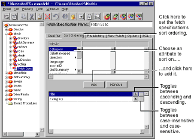
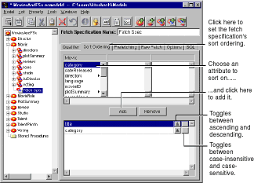

 Figure 43. Assigning a Sort Ordering Simply choose an attribute to sort on, and click Add. The order in which you add the attributes specifies the weight to assign to them. In Figure 43, the fetch specification sorts first on title and then on category.

Figure 43. Assigning a Sort Ordering
Additionally, for each attribute you sort on, you can specify an ascending or descending order and whether to perform a case-sensitive or case-insensitive comparison.
Table of Contents Next Section
 Table of Contents
Table of Contents  Next Section
Table of Contents
Next Section
Table of Contents  Previous Section
Table of Contents Next Section
Previous Section
Table of Contents Next Section